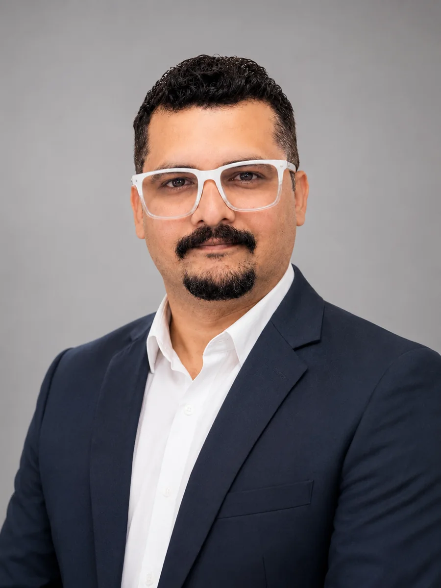

01 / Futures
Strategic foresight
Scenario thinking, horizon scanning, futures literacy and participatory conversations about the long-term future of organizations and society.
I'm Dr. Salman Ahmed Khatani, a futurist, academic, and AI strategist helping people and institutions explore alternative futures, build foresight capabilities, and navigate technological change responsibly.

Dr. Salman Ahmed Khatani · Futures Studies and ForesightMy work sits at the intersection of futures studies, education, responsible artificial intelligence, and institutional change. I bring academic inquiry and practical foresight together to help communities identify possibilities beyond business as usual.
Based in Karachi, I serve as an Associate Professor at Iqra University and participate in international foresight networks. I founded Fiker Futures Academy to expand access to applied AI literacy and futures-oriented learning.
Foresight is not about claiming to know what happens next. It is about helping people explore uncertainty, question assumptions, and make more informed decisions in the present.
Explore the ideas behind the work through original publications and workshops.
From a futures literacy lab to an executive AI session, every engagement starts with the people and decisions that matter.
Scenario thinking, horizon scanning, futures literacy and participatory conversations about the long-term future of organizations and society.
AI literacy, organizational readiness, human-centered adoption and ethical decision-making in education and professional practice.
Workshops, lectures, youth initiatives and applied programmes that help people build their capacity to anticipate and shape change.
Founded by Dr. Salman Ahmed Khatani, the society connects futures education, alumni engagement and the responsibility to help communities imagine and shape more inclusive futures.
Dr. Khatani reports that more than 25,000 students have graduated from introductory futures and foresight courses across Iqra University campuses. This figure describes course graduates, not verified membership of the Facebook society. An institutional aggregate is being sought for independent confirmation.
Student-led project-based learning links Ethics and Social Responsibility with community engagement and relevant UN Sustainable Development Goals. Students work with community partners to design and carry out locally grounded interventions.
The alumni count and society founder attribution are supplied by Dr. Khatani. Course participation, society membership and measurable project outcomes are different indicators.
Selected examples from student-submitted Ethics and Social Responsibility project reports. These are descriptions of activities documented by student teams, not independent evaluations of long-term social outcomes.
In a Fall 2024 student report, an Iqra University ESR group describes food and school-supply donations, coloring and sports, social responsibility discussions, and a basic ChatGPT awareness session for children.
Source: Fall 2024 ESR student project report supplied to Dr. Khatani; report and identifiable child photographs are not published here.
Another Fall 2024 student group reported painting, color-recognition games, accessible sports and an “Adopt a Plant” activity designed to encourage inclusive learning and community awareness.
The report describes the student team's intended and observed activities; it does not establish lasting educational impact.
See the community partner's linked post ↗An ESR student group documented a visit to a government school in North Nazimabad, with motivational discussion, drawing, tree planting, sports and recognition activities. Their report credits Dr. Khatani as a project facilitator and mentor.
The project report is an account from the participating student team. Any use of its photographs requires appropriate permissions.
Illustrated panels are original graphic treatments, not documentary photographs. Project images and video may be added after checking consent from students, community partners, parents or guardians where children are identifiable, and any institutional publication requirements.
A selection of teaching, institutional foresight, academic engagement and community encounters. Each image connects to the activities and people behind the work.


Professional and institutional sessions connecting Futures Literacy, leadership, AI and collaborative futures thinking.


Academic engagement, student participation and community-facing learning, documented through original event photographs.


Selected visual evidence of your book, professional conversations and wider academic engagement. Interview recordings are intentionally not embedded.


Explore learning programmes at Fiker Futures Academy.
Selected independent reporting and coverage of public talks, conversations about AI, and futures-focused education. These links refer to published coverage, not endorsements or rankings.
Coverage of the “Designing Tomorrow with Artificial Intelligence” discussion featuring Dr. Khatani.
Read the coverage ↗Festival reporting discussing Dr. Khatani's ideas on preparing younger generations for AI-enabled futures.
Read the coverage ↗Reporting on the Adab Festival session in which Dr. Khatani participated.
Read the coverage ↗Newspaper coverage of a Writers and Readers Cafe discussion at the Arts Council of Pakistan, Karachi.
Read newspaper PDF ↗Additional interviews, opinion pieces, broadcasts and international coverage can be added once their original links, dates and publication details are verified.
A journey through civilizational memory, indigenous storytelling, Futures Studies and Foresight. Learn from yesterday, challenge your assumptions today, and explore what tomorrow could become.
🦜 Meet the Futures Parrot. A contemporary fictional guide inspired by South Asian storytelling, asking questions rather than predicting answers. The parrot is a new design character, not a claimed archaeological symbol of Mohenjo-daro.
Standing imaginatively among the brick streets of Mohenjo-daro, the Futures Parrot asks: What might future generations learn from our cities? Explore water, public space, resilience and the assumptions behind how we live.
Original speculative vignette inspired by the archaeological site; not a story attributed to its historical inhabitants.
Carrying a basket of eggs, Sheikh Chilli imagines a growing business and a prosperous future. But what if one assumption fails? The parrot invites you to create three futures: growth, disruption and an unexpected alternative.
Original educational adaptation of a widely retold South Asian folktale; not a quotation or a chapter from the book.
What could change? What do we assume will remain the same? What can we test or do now? Move from attractive stories toward responsible, evidence-informed action.
The parrot is a fictional website guide created for this learning experience.
Try this free introductory exercise inspired by the themes of Dr. Khatani’s book and Futures Studies and Foresight workshops. This is a website-created companion activity, not a reproduction of the book’s original toolkit.
Your responses stay in this browser page and are not sent to this website by this worksheet.
A Guide to Futures Literacy, AI Wisdom and Purposeful Living. Explore the author's book, the ideas behind this interactive experience and the accompanying learning pathways.
View book listing ↗A verified open-access full-text edition has not yet been located. The companion exercise above is free to use.
Continue exploring Futures Studies and Foresight, alternative futures and practical questions using Dr. Khatani’s custom GPT.
Open the GPT ↗Mohenjo-daro is a real archaeological site. Sheikh Chilli is a figure in regional folklore. Their roles here are distinct from contemporary fictional storytelling and foresight exercises.
The prompts are speculative and make no claim to reproduce archaeological beliefs or an authoritative traditional version of the folktale.
Explore research connecting Futures Literacy Labs, long-term thinking, sustainability and real-world challenges in Pakistan.
Discover Dr. Khatani's profile and involvement in the international NGFP Steering Committee.
Futures Literacy, AI wisdom and purposeful living: an invitation to move from passive prediction to active participation in the future.
Futures studies, business administration, AI literacy, ethical technology and long-range thinking.
Founder of the Young Futurist Society of Pakistan and Fiker Futures Academy.
Next Generation Foresight Practitioners Steering Committee participation and broader international collaboration.
Newspaper coverage, interviews and events bringing AI and futures-focused thinking to wider audiences.
Research archive · Selected published work
Explore selected co-authored research on Futures Literacy, climate resilience, scenario planning and the imagination of alternative futures. See the original publisher records for complete attribution and publication details.
2024 · Journal of Education & Social Sciences
Co-authored study of a Pakistan-focused Futures Literacy Lab and the III approach.
Publisher record ↗2024 · Voyage Journal of Educational Studies
Co-authored research on intuition, assumptions and scenario planning.
Read publication ↗2024 · International Journal of Social Science and Entrepreneurship
Co-authored research exploring imagination and futures thinking.
Read publication ↗Selected entries only. Complete bibliography and link verification are in progress; unpublished manuscripts are not presented as published research.
Writing · Articles · Interviews
A forthcoming editorial archive of original commentary, research explainers, media interviews and documented public conversations. New writing will carry an author, publication date, topic and primary references.
Featured public coverage · 2025
Dawn coverage of the Adab Festival Karachi discussion involving Dr. Khatani.
Read coverage ↗Editorial series · Planned
Original articles connecting published research, education, emerging change and responsible futures.
Coming after editorial reviewMedia archive · In preparation
Verified interview records will appear here with outlet, date, topic and an accessible transcript when available.
Interview links will be added after verificationFor academic collaboration, keynote invitations, workshops, institutional foresight projects, community initiatives or media conversations, connect with me through my professional profile.